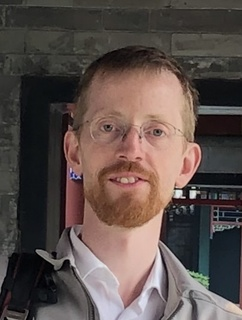

micro = require("micromodal@0.4.10");
micro.init({
awaitOpenAnimation: true,
awaitCloseAnimation: true
});EuroCIM 2026 Oxford, United Kingdom
The conference will be from 15-17 April 2026, with pre-conference courses on the 14th.
Key dates
| Event | Date |
|---|---|
| Abstract submission opens | 10 November 2025 |
| Abstract submission closes | 16 January 2026 |
| Early-bird registration deadline | 10 March 2026 |
| Registration deadline | 2 April 2026 |
| Pre-conference courses | 14 April 2026 |
| EuroCIM Oxford | 15-17 April 2026 |
Venue
Mathematical Institute
Andrew Wiles Building
Woodstock Rd
Oxford OX2 6GG
Keynote speakers



Invited speakers
The invited speakers are organized into tandem thematic sessions. Each speaker will give their perspective on a similar theme.
About EuroCIM
The general theme of the meeting is “Causal Inference in Health, Economics, and Social Sciences”. Causal inference is broadly defined, and the focus is on statistical methodology and challenging applications that highlight necessary methodological extensions.
- EuroCIM aims to provide a forum for people interested in causal inference to meet informally, for early career and established researchers to present and discuss the latest developments in the field, and to offer opportunities for networking to develop future research opportunities and collaborations.
- EuroCIM evolved from what used to be the “UK Causal Inference Meetings” (UK-CIM). The EuroCIM steering committee consists of Alessandra Mattei, Rhian Daniel, Erin Gabriel, Fabrizia Mealli, Finbarr Leacy, Jon Michael Gran, Karla Diaz-Ordaz, Kate Tilling, Kjetil Roysland, Mats Stensrud, Niels Richard Hansen, Noemi Kreif, Oliver Dukes, Paul Clarke, Richard Emsley, Sara Geneletti, Sabine Landau, Michele Santacatterina, Stephen Burgess, and Vanessa Didelez.
Please note that registration for the meeting is not restricted to people from Europe, and we welcome participation from anyone who would like to attend!
Sponsors
Eurocim 2026 received support from:
Local organising committee
Robin Evans, Ruth Keogh, Kyra Delray, Pablo Geraldo, Yasin Ibrahim, Linying Yang, and Jakob Zeitler